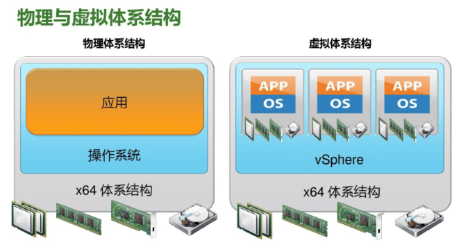

虚拟化基础平台 VMware vSphere
TAGS: Linux
内容概述
- VMware 简介
- 安装 ESXi
- 在 ESXi 创建和管理虚拟机
- 安装 Vcenter
- 通过 Vcenter 管理 ESXi 主机的虚拟机
- 实现跨主机的虚拟机迁移
VMware简介
VMware 介绍
VMware 公司成立于1998年，2003年存储厂商EMC以6.35亿美元收购了VMware；2015年10月，戴尔宣布以670亿美元收购EMC
VMware 公司在 2018 财年全年收入79.2亿美元。
VMware的主要产品
Workstation Pro：面向Windows的虚拟化。
Fusion for Mac：面向Mac的虚拟化。
ThinApp：是一款无代理应用虚拟化解决方案。是一款便携软件或单文件打包工具，可以把有很多文件 或者文件夹的程序打包成一个单文件.可以将应用程序封装起来以与 OS 或其他程序独立开；将程序插入 到 MSI 或 EXE 文件中并部署一个包括注册表键值、DLL、第三方库及 Framework 的虚拟系统环境，而 无需在底层操作系统中安装的任何的代理或应用,可以避免程序的冲突。
Horizon：用于管理虚拟桌面 (VDI)、应用和在线服务的领先平台。
Horizon Cloud：用于托管虚拟桌面和应用的灵活云计算平台。
NSX for Horizon：一款虚拟桌面基础架构VDI(Virtual Desktop Infrastructure)网络连接解决方案。
VMware Enterprise PKS：面向多云企业和服务提供商的生产级 Kubernetes。
VMware vSphere Integrated Containers：用于传统应用和容器化应用的企业级容器基础架构。
vSAN：经过闪存优化的 vSphere 原生存储，适用于私有云和公有云,即实现存储虚拟化。
VMware vSphere：业界领先的服务器虚拟化平台，作为基础平台，是云环境的理想之选
官网链接: https://www.vmware.com/cn/products/vSphere.html
VMware 服务器虚拟化第一个产品叫ESX，后来VMware在4版本的时候推出了ESXi，ESXi和ESX的版本最大 的技术区别是内核的变化，从4版本开始VMware把ESX及ESXi产品统称为vSphere，但是VMware从5版本开 始以后取消了原来的ESX版本，所以现在来讲的话vSphere就是ESXi，只是两种叫法而已。一般官方文档中以 称呼vSphere为主。

VMware vCenter Server：用于管理跨混合云的 vSphere
虚拟化环境的集中式管理平台，https://www.vmware.com/cn/products/vcenter-server.html。
架构说明
VMware vSphere
版本选择
版本选择选择：5.0 5.5 6.5 6.7 7.0 8.0
- standard
- Enterprise
- Enterprise plus
发行版本说明
VMware ESXi 版本和内部版本号历史记录
参考链接 https://blog.csdn.net/z136370204/article/details/97042440
VMware vSphere 6.7 发行说明
https://docs.vmware.com/cn/VMware-vSphere/6.7/rn/vsphere-esxi-vcenter-server-67-release-notes.html
与 vSphere 6.5 所支持的处理器相比较，vSphere 6.7 不再支持以下处理器： Xeon 31xx、33xx、34xx Lynnfield 和 Clarkdale、35xx 和 36xx 系列 Xeon 52xx、54xx、55xx、56xx 系列 Xeon 65xx 系列 Xeon 75xx 和 74xx 系列 i3/i5 Clarkdale 系列 i7-620LE 处理器系列 各种 i3/i5/i7 Nehalem/Bloomfield/Clarksfield、Lynnfield、Clarkdale/Arrandale、Westmere/Gulftown 系列 AMD Barcelona、Shanghai、Champlain、Rana、Istanbul、Magny-Cours、Lisbon 系列 Opteron 13xx、23xx、24xx、41xx、61xx、83xx、84xx 系列 Athlon-II-X2 Champlain、Athlon-II-X3/X4 Rana 系列
VMware vSphere 8 发行说明
https://docs.vmware.com/cn/VMware-vSphere/8.0/rn/vmware-vsphere-80-release-notes/index.html
申请使用 VMware vSphere
需要注册账号并申请试用
1.注册账号
https://my.vmware.com/cn/web/VMware/registration
需要到邮箱验证激活自己的帐号
收到邮件,后激活帐号
2.申请试用VMware vSphere
默认的帐号不能下载安装包，需要申请试用相应的产品才可以下载
https://www.vmware.com/cn/try-VMware.html
https://my.vmware.com/cn/group/VMware/evalcenter?p=vSphere-eval-7
3.下载VMware vSphere安装程序
https://my.vmware.com/cn/group/VMware/home
https://my.vmware.com/cn/web/VMware/info/slug/datacenter_cloud_infrastructure/VMware_vSphere/6_7
试用申请通过之后就可以下载安装镜像
开始安装 VMware ESXi
VMware vSphere 文档： https://docs.vmware.com/cn/VMware-vSphere/index.html
新建宿主机
生产环境中宿主机都是物理机,推荐采用较高的硬件配置,如下示例
DELL R740XD CPU: 2个CPU 每个CPU 12C*2(线程)=24 48c 内存: 128G内存 8根*16G 磁盘: 8块600G 15K/RPM RAID10 双口万光纤以太网卡 iDRAC(integrated Dell Remote Access Controller)远程控制卡 运行虚拟机: 15个左右虚拟机,每个虚拟机配置: CPU4C 内存8G 硬盘60G
本此为实验环境, 用虚拟机实现宿主机
基于VMware workstation虚拟机运行VMware ESXi，安装两台ESXi服务器，IP地址分别是10.0.0.101和10.0.0.102
- 稍后指定操作系统 - 选择对应的VMware ESXi版本 - 指定虚拟及名称及路径 - 指定磁盘文件大小200G - 创建完成虚拟机 - 选择ESXi安装镜像 - 调整内存大小和CPU个数及开启虚拟化功能.如 8vCPU, 8memory , 勾选虚拟化引擎-硬件辅助虚拟化
开始安装ESXi节点
- 界面中，回车。确认安装 - 同意协议。按F11同意license - 扫描可用硬件 - 选择硬盘并安装。回车 - 选择键盘：US default - 设置管理员密码 注意: 密码最少七位，且必须符合密码复杂度要求 - 开始安装。按F11开始安装 - 安装过程中 - 安装完成。回车，重启操作系统。
配置IP地址
第一次重启后,默认为DHCP获取的IP地址,通常会将服务器配置为静态IP地址,
- 默认获取的动态IP,按F2进行登录
- 登录服务器。输入root及密码
设置静态IP。选中Configure Management Network 进入,再选中IPv4 configuration进行IP配置,回车确定
默认为通过DHCP获取的IP地址,修改为静态IP地址
回车进行IP配置
空格选中Set static IPv4 后,输入指定的IP地址后,回车确定
配置DNS
180.76.76.76 223.6.6.6
选中 DNS Coniguration 进入下面界面进行DNS 和主机名的配置,完成后回车确定。
重启网络服务
上面界面完成后, 按ESC退出后，再按Y确认重启网络服务
- 启用本地登录和ssh服务连接功能
- 选中 Troubleshoot Options 进行 ssh 服务配置
- 选中 Enable ESXi shell 回车启用shell，开启本地登录功能
- 选中 Enable SSH 回车启用 ssh服务,成功后可以看到下面显示
- 本地登录修改ssh服务允许基于密码登录
默认无法用密码登录ssh服务,只支持基于key登录, 需要修改配置才可以实现基于密码登录
按 alt + F1 组合键可以看到下面界面,输入用户密码登录
修改sshd服务的配置文件/etc/ssh/sshd_config 将 PasswordAuthentication 此行，密码验证 no 修改为 yes 并保存 下面一步可选不执行也能生效 执行命令 /etc/init.d/SSH restart 或 services.sh restart 生效 测试 ssh 远程基于密码进行连接
登录web管理界面
通过浏览器可以单独访问web界面进行单机管理
- 使用浏览器访问 node IP地址. https://10.0.0.101
注册正式版本： 管理–>许可
web管理界面首页
- "虚拟机" 可创建虚拟
- “存储” 可以上传光盘镜像iso文件
通过VMware workstation管理ESXi: VMware workstation 文件–连接到服务器：
安装第二台ESXi主机
- 主机名为 esxi-node2.cici.org
- IP地址: 10.0.0.102
- 安装同第一台ESXi主机,过程略
通过web界面在ESXi创建虚拟机
注意:安装完虚拟机后,建议将光驱剥离虚拟机,防止迁移的问题
修改虚拟机的配置,建议关机修改,在线可能会比较慢
ESXi宿主机开启硬件辅助虚拟化
VMware vSphere 必须依赖宿主机开启硬件辅助虚拟化功能，即必须在宿主机的BIOS设置中开启Intel vt-x，如果是AMD CPU则是开启AMD-V。
开启过程：
准备需要安装系统的ISO镜像
将 ISO文件上传至保存在当前ESXi节点上
存储—数据存储浏览器—创建目录
新建目录后,点上载
多次上传生产使用的ISO镜像
上传的ISO文件实际保存在ESXi主机的目录 /vmfs/volumes/datastore1/ISOs中
[root@esxi-node1:~] ls /vmfs/volumes/datastore1/ISOs/ CentOS-7-x86_64-Minimal-2003.iso CentOS-8.2.2004-x86_64-minimal.iso
当然，也可以连接一个nfs共享存储，将镜像文件都放到共享存储中。
创建虚拟机
通过web界面创建虚拟机的详细过程
- 开始创建虚拟机并选择类型. 虚拟机-—新建/注册虚拟机, 按下面显示安装
- 定义虚拟机名称与版本. 如果安装windows 无需像KVM一样,加载软驱或光盘用来 安装virtIO驱动
- 定义存储. 默认设置即可
- 自定义配置. 虚拟机基础信息定义
- 基础信息配置
- 硬盘默认即可
- 硬盘配置
- 磁盘置备说明
- 选择ISO镜像
磁盘置备说明
1、厚置备延迟置零(默认 default)： 默认的创建格式，创建过程中为虚拟磁盘分配所需空间。创建时不会擦除物理设备上保留的任何数据，没有置 零操作，当有IO操作时，需要等待清零操作完成后才能完成IO， 即：分配好空间，执行写操作时才会按需要将其置零。 2、厚置备置零(thick)： 创建支持群集功能的厚磁盘。在创建时为虚拟磁盘分配所需的空间。并将物理设备上保留的数据置零。创建这 种格式的磁盘所需的时间可能会比创建其他类型的磁盘长。 即：分配好空间并置零操作，有IO的时无需等待任何操作直接执行。 3、精简置备（thin）： 精简配置就是无论磁盘分配多大，实际占用存储大小是现在使用的大小，即用多少算多少。当客户机有输入输 出的时候，VMkernel首先分配需要的空间并进行清零操作，也就是说如果使用精简配置在有IO的时候需要： 等待分配空间和清零，这两个步骤完成后才能进行操作，对于IO叫频繁的应用这样性能会有所下降，虽然节省 了存储空间。
磁盘模式说明
从属:是默认的磁盘模式，它既无特殊性也无特殊要求，只有普通的vmdk磁盘。创建快照后，数据将与磁盘增 量一起保存，以根据需要添加到现有数据中或删除。 独立-持久:如果经常使用快照功能，则它非常有用。还原快照时，在此模式下它完全不会影响磁盘。这种磁盘 在数据不需要恢复到初始状态的情况下非常有用，例如系统日志或站点日志，其内容需要保存在当前状态。删 除快照时切换到此磁盘模式，如果启动或停止VM，数据将保持不变。 独立-非持久:这是一个重做磁盘，这意味着如果在启用“独立–非–持久”模式的情况下启动VM，则所有更改都 将写入磁盘增量中。以前存在的数据为只读。因此，如果停止或启动虚拟机（不是重启，不影响任何操作）， 或者删除快照，则所有更改都将被放弃。 总而言之，你可以打开和关闭这些模式中的每一个，但是请记住，只有在VM停止后才能这样做。
- 确认完成信息
开始安装过程.
- 打开虚拟机电源，开始系统安装： - 安装完成 - 测试虚拟机的网络访问. 登录虚拟机后可以访问外网, 从外网也能访问此虚拟机 - 安装另一台 ubuntu 虚拟机
管理虚拟机
配置IP并测试远程登录，在每台ESXi宿主机分别安装一台虚拟机，IP地址设置为10.0.0.103/104
配置静态IP
登录到虚拟机配置网卡名称并设置静态IP地址
[root@centos8 ~]# cat /etc/default/grub GRUB_TIMEOUT=5 GRUB_DISTRIBUTOR="$(sed 's, release .*$,,g' /etc/system-release)" GRUB_DEFAULT=saved GRUB_DISABLE_SUBMENU=true GRUB_TERMINAL_OUTPUT="console" GRUB_CMDLINE_LINUX="crashkernel=auto resume=/dev/mapper/cl-swap rd.lvm.lv=cl/root rd.lvm.lv=cl/swap net.ifnames=0" GRUB_DISABLE_RECOVERY="true" GRUB_ENABLE_BLSCFG=true [root@centos8 ~]# grub2-mkconfig -o /etc/grub2.cfg [root@centos8 ~]# cat /etc/sysconfig/network-scripts/ifcfg-eth0 TYPE="Ethernet" BOOTPROTO="static" NAME="eth0" DEVICE="eth0" IPADDR=10.0.0.11 PREFIX=24 GATEWAY=10.0.0.2 DNS1=180.76.76.76 DNS2=223.6.6.6 ONBOOT="yes" [root@centos8 ~]# systemctl disable --now firewalld [root@centos8 ~]# vim /etc/selinux/config SELINUX=disabled
远程连接虚拟机
通过配置好的静态IP地址测试是否可以远程连接
Connecting to 10.0.0.11:22... Connection established. [root@centos8 ~]# hostname -I 10.0.0.11 [root@centos8 ~]# ping www.baidu.com -c6 PING www.a.shifen.com (61.135.185.32) 56(84) bytes of data. 64 bytes from 61.135.185.32 (61.135.185.32): icmp_seq=1 ttl=128 time=16.1 ms
将虚拟机的光驱卸载
关闭虚拟机后,再将虚拟机光驱卸载,以防止后期迁移虚拟机出错
注意: 关闭虚拟机后再修改配置,否则会很慢
安装 VMware vCenter Server
安装VMware vSphere vcenter管理程序
安装系统的 环境依赖
必须安装在系统版本是Windows Server 2008 SP2(需要打补丁和相关运行时环境)或更高版本，本环境以Windows Server 2016为例。
- 支持的操作系统. 假如操作系统不符合要求，则报错
- 内存大小符合要求. VMware vSphere需要最小8176MB内存，假如内存大小不符合要求，则报错如下：
- 系统环境符合安装要求. Windows Server 2008 系统需要安装运行时, Windows Server 2016则无需安装
安装Windows Server
安装windows server 2016以上版本的server系统，并将其内存设置为大于8g。
- 新建Windows Server 宿主机. 调整内存大于8G和CPU个数,挂载window 2016的光盘
Windows Server 2016安装过程. 打开虚拟机并开始安装Windows Server 2016安装, 任意键从CD或者DVD启动
Windows Server 2016 Standard 和Datacenter版本比较
https://docs.microsoft.com/zh-cn/windows-server/get-started/2016-edition-comparison
注意: 选择Datacenter(桌面体验)选项
登录并修改配置
设置用户密码
登录系统：需要ctrl+alt+delete组合键登录：
登录后的界面：
配置静态IP地址：
建议关闭防火墙:
测试网络通信：
建议对虚拟机做快照，方便后期恢复基础环境。
安装VMware vCenter Server
在windows server 2016安装 VMware vcenter server
- 将光盘换成 vcenter ISO镜像. 挂载光盘镜像 VMware-VIM-all-6.7.0-14367737.iso
- 通过镜像加载安装程序. 运行autorun程序开始安装
安装向导：
- 开始安装 - 同意许可 - 选择嵌入式部署 - 指定系统名称. 注意,此名称后期无法修改,如果无法解析可以使用IP - 系统名称需要配置DNS或hosts文件实现名称的解析. 修改DNS或hosts文件 c:\Windows\System32\drivers\etc\hosts - vCenter的管理员密码 - 使用本地账户登录 - 使用本地数据库 - 确保防火墙打开以下端口 - 确认安装目录 - 确认安装信息 - 安装过程中 时间较长 - 安装完成
60天使用权，之后要买许可。
管理 VMware vCenter
通过浏览器访问VMware vSphere
输入下面地址访问
http://10.0.0.100 http://vcenter.cici.org #需要配置DNS或hosts解析
选择 启动 vSphere Client (HTML5)
登录用户: administrator@vSphere.local
密码: 安装时指定
添加ESXi主机到 VMware vCenter管理
新建数据中心. 右键单击–>新建数据中心 –> 定义数据中心名称
在数据中心中添加ESXi主机. 将配置好的两台ESXi主机分别添加至vcenter进行统一管理，需要网络必须可以连接。 - 通过主机 IP添加 - 连接用户名和密码 - 信任证书 - 主机摘要信息 - 锁定模式. 保持默认的禁用的状态,否则ESXi主机将无法本地登录 - 定义虚拟机位置 - 最终主机信息 - 执行主机添加任务. 等待VCenter 将ESXi 主机添加进来,下面有进度显示 - 主机中的虚拟机信息. 添加完成后,可以在主机中看到ESXi上面的虚拟机的信息
重复上面过程将第二台ESXi添加至数据中心, 过程略
利用 vCenter 管理已有虚拟机
- 确认虚拟机状态. 确认已有的虚拟机是开机状态，否则请单独打开虚拟机电源 - 启动虚拟机控制台 - 登录虚拟机控制台窗口 - 配置虚拟机静态IP - 验证网络通信 - 验证web访问
安装web服务如apache或者nginx，并验证是否可以从局域网访问虚拟机,配置web服务器
批量管理虚拟机
将虚拟机克隆生成新的虚拟机
基于现在的虚拟机克隆来创建新的虚拟机
如果跨ESXi主机克隆虚拟机,需要事先将光盘断开连接
注意:先关闭虚拟机再修改配置
选择存储
将虚拟机克隆成模版
虚拟机右键–>虚拟机克隆为模板
注意: 在克隆前先将虚拟机的IP修改为DHCP,访止IP地址冲突
基于模版创建虚拟机
生产中经常利用模版批量创建虚拟机,比手动安装虚拟机可以大大提高效率
将虚拟机转换为模版
注意:将虚拟机转换成模版需要先关机虚拟机才能转换
将模版转换成虚拟机
注意: 模版转换虚拟机时,必须都在同一台ESXi主机实现,跨主机会失败
模版转化为虚拟机时,必须模版和虚拟机必须选择在同一个ESXi主机
将Windows Server 虚拟机转换为模版,并基于它创建新的虚拟机
- 安装 Windows Server 运行sysprep程序删除个性信息 c:\Windows\System32\sysprep\sysprep.exe - 系统清理操作选择“进入系统全新体验”，关机选项选择“关机” - 将虚拟机转换为模版 - 基于模版创建虚拟机 - 新的虚拟机第一次开机会重新做初始化生成新的主机名和密码等个性信息
实现虚拟机迁移
实现将虚拟机在VMware ESXi主机之前修改光盘配置,访止迁移中出现问题
配置vMotion专用网络
实现虚拟机跨主机迁移前,必须在每个ESXi主机先建vMotion 网络,否则会出现错误
在第一个ESXi主机添加vMotion网络
添加网络 - 主机—配置—虚拟交换机—添加网络 - 或者直接点源ESXi主机,右键添加网络 选择连接类型, 默认 选择目标设备。选择现有的标准交换机--浏览--选择交换机 指定端口属性. 在已启用的服务勾选vMotion选项实现虚拟机迁移 IP地址配置. 指定IP,可以和ESXi主机不在一个网段 验证最终信息
可以在虚拟交换机看到多了一个实现迁移的虚拟交换机网络。
在第二台ESXi主机也创建vMotion网络
在第二台主机也重复上面步骤,指定同一网段的IP
注：各node节点都要添加vMotion网络，IP地址不能冲突
执行虚拟机迁移
检测实时迁移丢包情况，ping要迁移的虚拟机ip，观察
在VMware ESXi主机中，选择要迁移的目标虚拟机，选中后右键单击，然后选择迁移
- 开始迁移 - 选择迁移类型. 由于没有使用共享存储，所以要选择更改计算资源和存储。 - 选择目标主机 - 选择目标主机存储 - 选择网络 - 选择vMotion优先级 - 最终迁移信息
- 验证迁移后的虚拟机网络通信是否正常 - 验证迁移过程的虚拟机网络通信是否正常